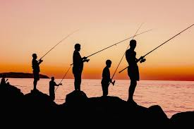

O que é a pesca recreativa?
Pesca recreativa é a pesca que se pratica como atividade de lazer, sem que dela dependa de um profissional de pesca (pescador). Também se pode chamar de pesca de lazer ou pesca amadora. Uma das modalidades mais populares da pesca desportiva é a praticada utilizando-se apenas vara de pesca, linha de pesca, chumbada, anzol apropriado e isca artificial.
Profissão para muitos esporte para outros!
Nossa história com a pesca
Rafael Melges: No dia do meu aniversário de 14 anos meu pai levou para pescar, e isso foi relaxante para mim, depois disso sempre que tinha alguma espécie de feriado prolongado ou férias eu ia com a família para um sítio do meu tio e lá eu pescava, na margem do lago ou em um barquinho de madeira eu sentia que aquele era o meu momento, mas desde os meus 18 anos eu nunca mais fui pescar.
Marcos Paulo: Durante a minha infância meus país iam no restaurante (e pesqueiro) irmãos hara, e lá eu aprendi a pescar já que o restaurante tem um lago e vende equipamentos de pesca, tendo a opção de pegar o peixe (e pagar porque eles não são trouxa) e simplesmente pegar e soltar o peixe sendo a opção recreativa.